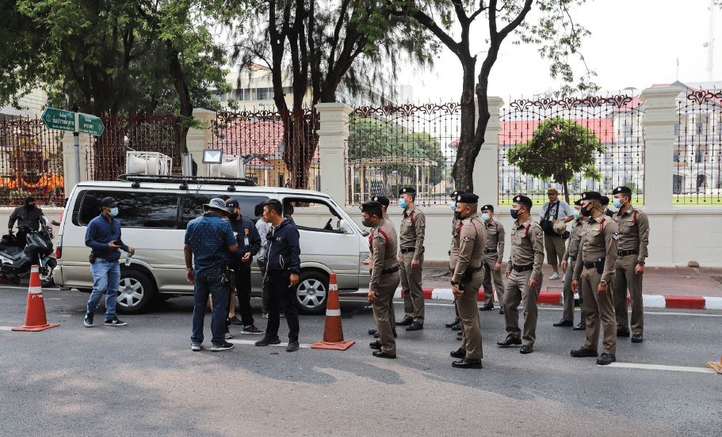

Defiance for Democracy in Myanmar India’s Concerns
Much has transpired in Myanmar since 1 February, 2021 when the tatmadaw (military) replaced the democratically elected President Win Myint, with an acting President, U Myint Swe. The latter transferred all powers to the military, under the leadership of General Min Aung Hlaing. Thereafter, Aung Sung Suu Kyi, along with most of the National League for Democracy (NLD) officials and other opponents of the tatmadaw were detained and a year long state emergency was declared, right before parliament was to convene for the first time since general election was held on 8 November, 2020.
More than a month over this watershed event, violence and chaos have spread in many parts of the country. While international condemnation and sanctions against the tatmadaw have poured in from various corners of the globe, including USA, New Zealand and others, India is trying to find a balance between its foreign policy ideals and geopolitical realities in addressing the challenge in its eastern neighbourhood. India’s position is going to be particularly defining for future of New Delhi’s development projects in Myanmar as well as the now dormant insurgent problem in its north east region (NER).
Tatmadaw’s junta avatar
Since its independence in 1948, Myanmar has seen the tatmadaw play the role of a junta for most parts of its history. In 1962, General Ne Win toppled the democratically elected government of Prime Minister U Nu, paving the way for a ‘Burmese way to Socialism’ that lasted, with a one-party rule of the Burma Socialist Programme Party (BSPP), for the next 26 years. Characterized by what is termed as ‘negative neutralism’ in foreign policy, Myanmar remained a rather closed country during this period, barring its interactions with China from the late 1970s. India on the other hand, though had gained out of the camaraderie between U Nu and Jawaharlal Nehru during the 1950s, was only left wanting to engage with Burma (the name used until 1988) at the time.
As discontent with the Ne Win regime grew, the tatmadaw once again usurped political power through a coup, following the nationwide 8.8.88 uprising that turned immensely bloody. This time, the tatmadaw was represented by the newly formed State Law and Order Restoration Council (SLORC, replacing the BSPP) led by General Than Shwe. The new avatar failed to find democratic support of the populace through the multi-party election in 1990. A transfer of power was disallowed. Instead, Suu Kyi, who emerged as the face of democracy in the country after the resounding success of the NLD, was put under house arrest. India vociferously threw its weight with the pro-democracy calls of the international community, many of whom imposed heavy sanctions on Myanmar and cornered it as a pariah state. As the popularity of Suu Kyi grew throughout the decade, so did the demand for democracy.
To remain legitimate and relevant, the junta took certain steps which were meant to signal a positive change. For one, the SLORC was dissolved and another avatar, the State Peace and Development Council (SPDC) was launched in 1997 as the tatmadaw’s political face. But as the saying goes, expressed an article in The Irrawady that year, “no matter how many times a snake sloughs off its skin, it is still the same (poisonous)” . The successor of the SPDC, the Union Solidarity and Development Party (USDP) launched in 2010 should therefore be seen as no more than old wine in new bottle.
Tatmadaw’s democratic insecurities
The tatmadaw has had an ambivalent notion of democracy as a tool of legitimacy, but one that is expected to produce only favourable results for itself. Hence, a democracy that is vibrant and different from what the tatmadaw envisioned has often bread insecurity for them, the most obvious being the insecurity of losing power. To avoid this, and to live up to General Khin Nyunt’s ‘seven-step-roadmap to democracy’ promised in 2003, the tatmadaw crafted its own political set up through a new Constitution in 2008.
The 2010 general election held as per the new rules worked well for the tatmadaw because the NLD boycotted it. In fact, President Thein Sein, seem to go beyond the tatmadaw script and usher in some changes that looked refreshing. However, as the first democratic transfer of power took place after the 2015 general election, ironically, the generals complained of being ‘bullied’ in parliament . Then, after the 2020 election results were declared, the UPSD called it fraudulent and refused to accept it. When the tatmadaw’s protest was allegedly not addressed satisfactorily, it marched across the capital, Nawpitaw, took over the political reigns of the country forcibly and trampled over democracy, a little more with each passing day.
Constitutional armour
Among other things, the 2008 constitution, the third of the country from the time of independence (earlier being 1947 and 1974), was meant to ensure continued power for the military through three routes. Firstly, Chapter 3, Article 59(f) is indirectly targeted at Suu Kyi, to bar her from becoming President, the top office of the country (since the designation of Prime Minister was removed). Yet, the new post of State Councellor created for her did not stop her from being the de facto leader since 2015. The Rohingya conundrum and her lack of voice to protect their plight did tarnish her image, albeit only internationally. At the national level, she remained the hope for democracy, as recent events have revealed. It is not surprising that on 1 March, 2021, two new criminal charges have been added to the obscure list issued against her, ever since the election campaign last year.
Secondly, Article 417 states that if there is ‘sufficient reason’, especially any act that can ‘disintegrate the Union or disintegrate national solidarity’ or lead to ‘loss of sovereignty’, emergency can be declared in the country. This is what was invoked in the coup this February. Interestingly, in contrast to the tatmadaw’s claim of lack of national solidarity, in a rare show of unity in decades, 10 of the ethnic armed groups have now joined the biggest Civil Disobedience Movement (CDM) ongoing in Myanmar, to resist the authoritarian regime.
Thirdly, while 25% of the seats in the parliament is reserved for the tatmadaw (Chapter 4, Article 109b, Article 141), the National Defence and Security Council (NDSC) stands above the parliament in case of emergency, as it ‘exercises sovereign power in the name of the President’ (Chapter 11, Article 431). General Hlaing, who heads it as the Commander-in-Chief, will be difficult to remove, despite his retirement due this July. If these were not testimony enough of the tatmadaw’s insecurities, the clause stating that 75% parliamentary votes are needed to change the constitution is a clear evidence of the armour made to protect the interests of increasingly notorious institution.
India’s concerns
‘Everything will be OK’, read the T-shirt of the 19-yearold girl, shot in the head, whose protest and death has become a symbol of defiance in Myanmar. By 4 February, at least 40 people were killed as the military used live ammunition, among other means, to quell the protests across various states. While Ambassador of Myanmar to the UN, Kyaw Moe Tun, openly appealed to the international community to resist the tatmadaw, the latter allegedly dismissed him of responsibility.
Despite democracy now being openly discarded in Myanmar, unlike its clear stand in 1988, New Delhi has been measured in its approach. Simply speaking, two main reasons explain this. One, India has an economically and strategically more intricate relationship with Myanmar today. The Look East Policy of 1991 (upgraded into the Act East Policy in 2014) has led New Delhi to engage with Nawpitaw through bilateral initiatives, as the Kaladan Multimodal Transit Transport Project (KMTTP), or multi-lateral ones, such as the Tri-lateral highway project. These projects worth USD 650 million, clubbed with development assistance worth USD 1.75 billion make it difficult to prioritize idealism over utilitarianism. The impact of this coup upon India’s development project therefore remains one of New Delhi’s gravest concerns at the moment.
Secondly, India has engaged with the military regime in the last decade, with a view to counter China from overwhelmingly edging ahead in this crucial neighbourhood. When General Min Aung Hlaing visited India in August 2012, he was allowed to invite upon the then Indian President beyond convention and what protocol permitted. More recently in October 2020, the visit by Indian Foreign Secretary and Chief of Army Staff to Myanmar reflected the enhanced engagement with the military. These developments should also be read in the backdrop of the insurgent problem India faces in its NER, which has reportedly seen 70% reduction in insurgency incidents by 2020 compared to 2013. India, therefore, now needs to urgently find a balance between the civil-military tug in Myanmar, least it throws the baby out with the water, that indeed is muddied already.
